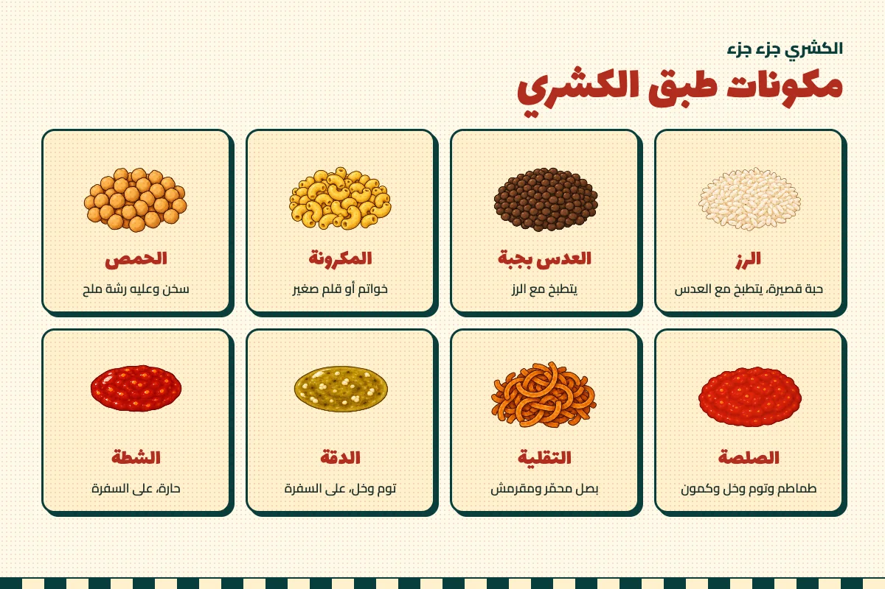
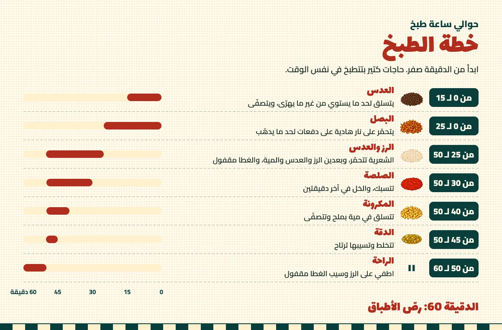
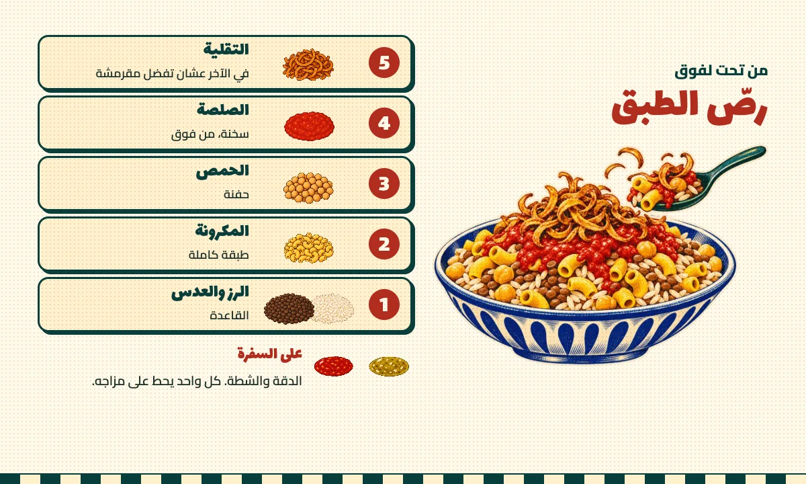

وصفة · من لعبة كشري بابا عبده · انتقل للوصفة · Read in English
طريقة عمل الكشري المصري زي المحلات
الكشري أكلة شوارع القاهرة: رز وعدس ومكرونة، وفوقهم صلصة سخنة وتقلية مقرمشة. دي نسخة البيت من طبق لعبتي «كشري بابا عبده»، بخطة تخلّص الطبخ في ساعة.

أنا متربي على كشري المحلات في القاهرة. ولما عملت «كشري بابا عبده»، وهي لعبة طبخ عن محل كشري صغير، اضطريت أرسم كل طبقة في الطبق. البوست ده بيرجّع الطبقات دي أكل حقيقي.
الكشري أجزاؤه كتير، بس كل جزء سهل. السر في الترتيب: ابدأ بالحاجات اللي بتاخد وقت، وسيب كذا حلة تتطبخ في نفس الوقت.
باختصار
- الكمية: يكفي 6 أشخاص (15 دقيقة تحضير، حوالي ساعة طبخ)
- النظام الغذائي: نباتي لو حمّرت في زيت نباتي (ولو عايزه خالي من الجلوتين استخدم نشا أو بصل سادة ومكرونة خالية من الجلوتين)
- الأدوات: حلة تقيلة للعدس وبعده الرز، طاسة غويطة للبصل وبعده الصلصة، حلة للمكرونة، وحلة صغيرة للحمص
المقادير (تكفي 6)

التقلية (البصل المحمّر)
- 3 بصلات كبيرة (حوالي 600 جرام)، مقطّعة شرائح رفيعة
- معلقة كبيرة دقيق أو نشا (اختياري، عشان تقرمش أكتر)
- كوب (240 مل) زيت عباد الشمس أو أي زيت نباتي
الرز والعدس
- كوب (200 جرام) عدس بجبة (عدس بني)
- 2 كوب (400 جرام) رز مصري، مغسول
- نص كوب (50 جرام) شعرية مكسّرة (اختياري)
- 3 معالق كبيرة من زيت التقلية
- معلقة صغيرة كمون
- معلقة ونص صغيرة ملح
- 3 كوب (720 مل) مية سخنة (استخدم مية سلق العدس وكمّلها مية سخنة؛ واستخدم 2 كوب ونص لو شلت الشعرية)
المكرونة والحمص
- 250 جرام مكرونة خواتم أو قلم صغير
- معلقة كبيرة من زيت التقلية
- علبة (400 جرام) حمص مسلوق، مصفّى، مع رشة ملح
الصلصة
- 2 معلقة كبيرة من زيت التقلية
- 6 فصوص توم مفرومة
- معلقة صغيرة كمون
- معلقة صغيرة كزبرة ناشفة
- نص معلقة صغيرة شطة مجروشة أو فلفل أحمر
- 2 معلقة كبيرة صلصة طماطم
- 400 جرام طماطم مهروسة (أو 5 طماطم مبشورة)
- كوب (240 مل) مية
- معلقة صغيرة ملح ورشة سكر
- 3 معالق كبيرة خل أبيض
الدقة
- 6 فصوص توم مدقوقة
- نص كوب (120 مل) خل أبيض
- نص كوب (120 مل) مية
- معلقة صغيرة كمون
- نص معلقة صغيرة ملح
- عصير نص لمونة (اختياري)
الشطة
- ربع كوب من الصلصة
- معلقة لـ 2 معلقة صغيرة شطة مجروشة أو فلفل أحمر
- 2 معلقة كبيرة دقة
- معلقة كبيرة من زيت التقلية
خطة الساعة
ابدأ العدّ لما العدس يطلع على النار. كذا حلة بتتطبخ في نفس الوقت، فاقرا كل سطر كده: «ابدأ في الدقيقة دي، واخلص في الدقيقة دي».

خطوة بخطوة
- اسلق العدس نص سوا (من الدقيقة 0 لـ 10). اغسل العدس وغطّيه بـ 4 أكواب مية وسيبه يغلي. وطّي النار وسيبه 10 دقايق، لحد ما يبدأ يطرى لكن يفضل ماسك نفسه من جوه. صفّيه فوق بولة واحتفظ بمية سلق العدس الغامقة.
- حمّر البصل (من الدقيقة 0 لـ 25). وإنت مستني العدس، قلّب البصل في الدقيق أو النشا (لو بتستخدمه). سخّن الزيت على نار متوسطة، وحمّر البصل على دفعتين وقلّب كتير، من 10 لـ 12 دقيقة لكل دفعة، لحد ما يدهّب ويغمق. شيله على ورق مطبخ عشان يقرمش وهو بيبرد. صفّي زيت التقلية في بولة تستحمل الحرارة واستخدم نفس الطاسة للصلصة.
- اطبخ الرز والعدس (من الدقيقة 25 لـ 50). في حلة العدس، سخّن 3 معالق من زيت التقلية. حمّر الشعرية حوالي دقيقتين لحد ما تدهّب، وبعدين قلّب الرز دقيقة. ضيف العدس المصفّى والكمون والملح و3 أكواب سائل سخن (ابدأ بمية العدس وكمّلها مية سخنة؛ واستخدم 2 كوب ونص لو شلت الشعرية). سيبه يغلي، وغطّي الحلة وسيبه على نار هادية 20 دقيقة.
- اعمل الصلصة (من الدقيقة 30 لـ 50). سخّن معلقتين من زيت التقلية في طاسة البصل. شوّح التوم 30 ثانية من غير ما يحمر. ضيف الكمون والكزبرة والشطة وصلصة الطماطم وقلّب دقيقة. ضيف الطماطم والمية والملح والسكر. سيبها تتسبك من 15 لـ 20 دقيقة لحد ما تغطّي ضهر المعلقة. ضيف الخل في آخر دقيقتين.
- اسلق المكرونة وسخّن الحمص (من الدقيقة 40 لـ 50). اسلق المكرونة في مية بملح كتير، أقل من الوقت المكتوب على الكيس بدقيقة. صفّيها وقلّبها في معلقة من زيت التقلية عشان ما تلزقش. سخّن الحمص في حلة صغيرة مع شوية مية ورشة ملح.
- سيب الرز يرتاح (من الدقيقة 50 لـ 60). اطفي النار على الرز وسيب الغطا مقفول 10 دقايق، وبعدين فكّه بالشوكة.
- اخلط الدقة والشطة (من الدقيقة 50 لـ 55). والرز بيرتاح وبعد ما الصلصة تخلص، اخلط التوم والخل والمية والكمون والملح وعصير اللمون للدقة، وسيبها كام دقيقة عشان التوم يهدى. وللشطة، اخلط ربع كوب من الصلصة الجاهزة مع الشطة والدقة ومعلقة كبيرة من زيت التقلية في طبق صغير.
رصّ الطبق

- الرز والعدس يملوا نص الطبق اللي تحت.
- المكرونة طبقة كاملة فوقهم.
- الحمص: حفنة.
- الصلصة: مغرفة، سخنة.
- التقلية: قبضة كبيرة، في الآخر.
حط الدقة والشطة على السفرة. في المحلات كل واحد بيحط على مزاجه، وناس كتير بتقلّب الطبق كله قبل أول معلقة.
عشان يطلع زي المحلات
- زيت التقلية في كل حاجة. الرز والصلصة والمكرونة والشطة كلهم بياخدوا معلقة من الزيت اللي حمّرت فيه البصل. ده معظم الطعم.
- الخل والكمون مرتين. في الصلصة وفي الدقة. الطعم الحامض الدافي ده هو اللي بيخلّي الكشري كشري.
- قطّع البصل رفيع ومتساوي. حمّره على دفعات على نار متوسطة عشان الزيت يفضل ثابت. وشيله قبل ما يغمق قوي، لأنه بيكمّل سوا على الورق.
- قدّم الصلصة سخنة. صلصة سخنة على رز دافي هي تجربة المحل. سخّن الصلصة تاني قبل ما ترصّ الأطباق على طول.
- سيب كل واحد يتبّل طبقه. الصلصة هادية، والحرارة كلها من الشطة.
الكشري في حلة واحدة
لو عايز حلل أقل، حمّر الشعرية في 3 معالق من زيت التقلية في حلة واسعة، وقلّب معاها الرز المغسول والعدس المسلوق نص سوا. وزّع المكرونة الناشفة على الوش من غير تقليب، وصب 4 أكواب سائل سخن (مية العدس متكملة بمية سخنة) مع الكمون والملح لحد ما يغطي المكرونة يا دوب. سيبه يغلي، وبعدين غطّي الحلة على نار هادية 18 لـ 20 دقيقة لحد ما يستوي. خلّي التقلية والصلصة لوحدهم.
التحضير بدري والتخزين
- خلّي كل جزء في علبة لوحده في التلاجة لحد 3 أيام.
- خلّي التقلية في برطمان ناشف ومقفول برّه التلاجة عشان تفضل مقرمشة.
- سخّن الرز والمكرونة مع شوية مية، وسخّن الصلصة في طاسة صغيرة.
الطبق في اللعبة
في «كشري بابا عبده» فيه ست صواني فوق الطبق: الرز والمكرونة والعدس والحمص والصلصة والتقلية، والدقة والشطة في قزايز. كل جار ليه طلب ثابت. حسن دايمًا من غير بصل ولا دقة ولا شطة، والطبق اللي طبقاته غلط بيضيّع عليك البقشيش.
في اللعبة العدس ليه صينية لوحده عشان تشوف كل طبقة. لكن في البيت اطبخه مع الرز، زي أغلب المحلات.

أسئلة
هل الكشري نباتي؟
أيوه، لو حمّرت البصل في زيت نباتي. كل أجزاء الكشري نباتية: رز وعدس ومكرونة وحمص وطماطم وبصل وتوم وخل.
هل الكشري خالي من الجلوتين؟
لأ. المكرونة والشعرية والدقيق الاختياري على البصل فيهم قمح. لو عايز طبق خالي من الجلوتين، استخدم مكرونة خالية من الجلوتين، وشيل الشعرية، وغلّف البصل بنشا أو حمّره من غير دقيق.
هل الكشري حراق؟
لأ، إلا لو حبيت. الصلصة في الوصفة دي هادية، والحرارة كلها جاية من الشطة اللي كل واحد بيحطها على طبقه على السفرة.
إيه هي دقة الكشري؟
الدقة صوص خفيف من التوم والخل والكمون، بتتحط على الطبق على السفرة. بتدّي الرز والمكرونة طعم منعش.
الكشري أصله منين؟
الكشري أكلة شوارع مصرية. أساسه من الرز والعدس بيتقال كتير إنه جاي من «الكتشري» الهندي، وهو أكلة رز وعدس. ومصر زوّدت المكرونة والحمص والصلصة والتقلية.
هل الكشري صحي؟
العدس والحمص فيهم بروتين نباتي وألياف. بس الكشري طبق كبير من النشويات، والبصل متحمّر. لو عايز طبق أخف، زوّد العدس وقلّل المكرونة والتقلية.
ينفع أستخدم عدس معلبات؟
الأحسن العدس الناشف، لأنك بتسلقه نص سوا وتطبخ الرز في مية العدس الغامقة عشان اللون والطعم. لو استخدمت عدس معلب، اغسله وقلّبه في الرز بعد ما يستوي.